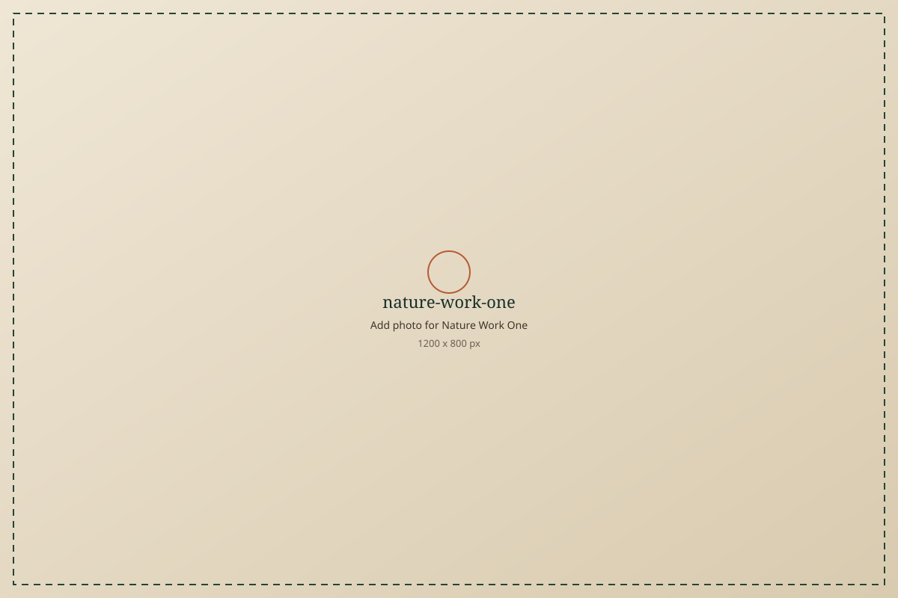
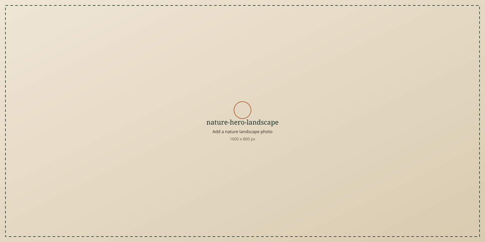
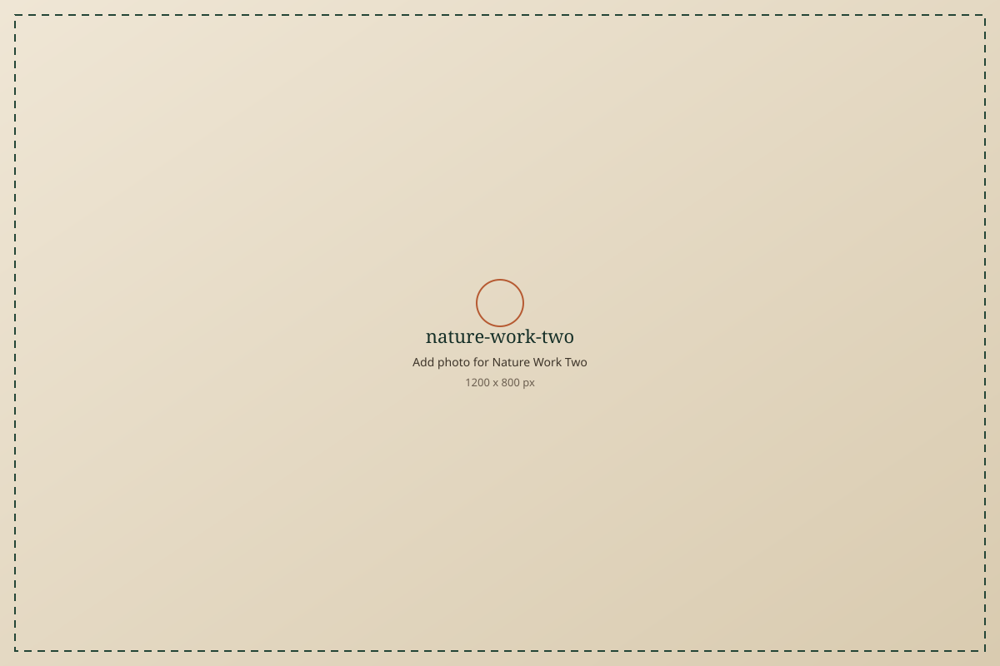
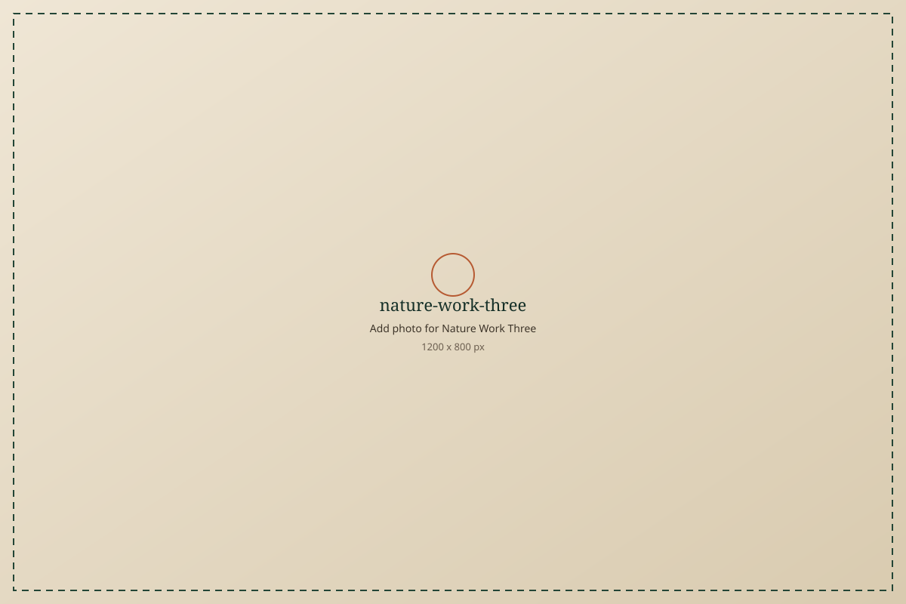

nature-work-onenature-title-one Nature work title one
nature-body-one
What you did, where it happened, and what grew from it. Add season and place if you wish.
Earth work
Describe why nature matters to you — planting, water, trees, soil, teaching outdoors, or care for a local place. Keep this as a living field note.


nature-work-oneWhat you did, where it happened, and what grew from it. Add season and place if you wish.

nature-work-twoWhat you did, where it happened, and what grew from it. Add season and place if you wish.

nature-work-threeWhat you did, where it happened, and what grew from it. Add season and place if you wish.
Use this longer slot for a journal entry: a walk, a planting day, a river, a tree you return to.